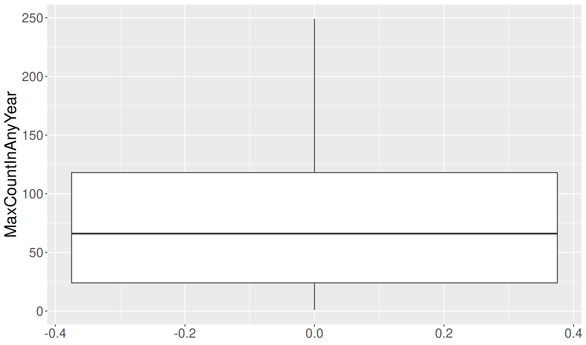
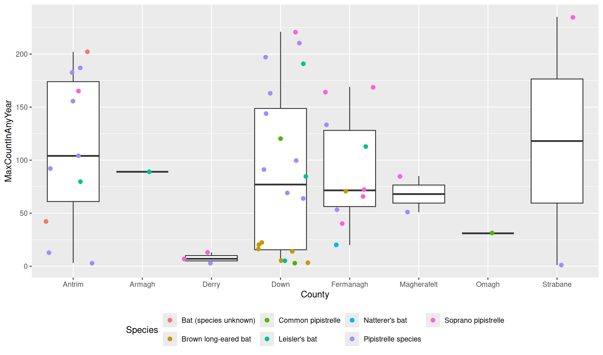

#Load package
library("mgrtibbles")
#mushroom_tbl tibble for demonstration
bat_roost_tbl <- mgrtibbles::bat_roost_tbl |>
#Select all but roost code column
dplyr::select(!RoostCode) |>
#Filter out rows with a MaxCountInAnyYear greater than or equal to 250
# and remove observations from "British Crown Dependencies"
dplyr::filter(MaxCountInAnyYear < 250 & Country != "British Crown Dependencies") |>
#Remove rows where Country or Species is NA
tidyr::drop_na(c("Country","Species"))Theme
The ggplot2::theme() component can be used to alter the appearance of a ggplot. There are many options but this page will show the following:
- Altering the size and colour of text.
- Changing the legend position.
For a full list of options please see the below web links:
Dataset
We’ll recreate many of the plots in the geom_boxplot() chapter, so we’ll load the bat_roost_tbl data from the mgrtibbles package (hyperlink includes install instructions). To preprocess the data we will:
- Remove the
RoostCodevariable/column withdplyr::select. - Remove rows/observations with a MaxCountInAnyYear greater than or equal to 250 with
dplyr::filter() - Remove rows/observations from the Country grouping “British Crown Dependencies” to retain the countries England, Northern Ireland, Scotland, and Wales with
dplyr::filter() - Remove rows/observations where the the Country or Species value is NA with
tidyr:drop_na()
Text
Although you can set the plot size with ggplot2::ggsave() to try to get appropriate text sizes this is not always the optimal way. Instead the text/font size can be chosen in the ggplot2::theme() function.
All text
Create the default box plot. We will set the the text size with the ggplot2::theme() option text=
This options then needs to be provided with the function ggplot2::element_text() which itself has different options. These include:
size=: Text sizecolour=: Text colour
In the plot we will set the text size to 20.
bat_roost_tbl |>
ggplot2::ggplot(aes(y = MaxCountInAnyYear)) +
ggplot2::geom_boxplot() +
#Theme
ggplot2::theme(text=ggplot2::element_text(size = 20))
Sets of text
We can set all the text in a plot to one set of options or we can individualise the different sets of text.
Examples of different text theme arguments include:
text=: All textaxis.text=: All axis values textaxis.text.x=: Text of x axis valuesaxis.text.y=: Text of y axis valuesaxis.title=: All axis title textaxis.title.x=: Text of x axis titleaxis.title.y=: Text of y axis titlelegend.text=: Text of legend labelslegend.title=: Text of legend title
Lets show some of these in action with the box plot with a layer of jittered points. As well as changing the size and colour of text we will also change the angle with angle=.
#Boxplot of max population count in bat colonies within counties of Northern Ireland
bat_roost_tbl |>
#Filter to only retain Northern Ireland rows
dplyr::filter(Country == "Northern Ireland") |>
#Box plot
ggplot2::ggplot(aes(y = MaxCountInAnyYear, x = County)) +
ggplot2::geom_boxplot() +
ggplot2::geom_jitter(aes(colour=Species), size=2) +
#Theme
ggplot2::theme(axis.title = ggplot2::element_text(size=20, colour = "blue"),
axis.text.x = ggplot2::element_text(size=12, angle = 10),
axis.text.y = ggplot2::element_text(size=12),
legend.text = ggplot2::element_text(size = 12),
legend.title = ggplot2::element_text(size = 20, colour="red")
)Legend position
Depending on the shape and size of your plot you may want to change the position of your legend.
Legend below plot
You can set the legend to be below the plot, rather that to the right, with theme(legend.position="bottom"). This is useful to give the plot the entire width of the plotting space.
#Boxplot of max population count in bat colonies within counties of Northern Ireland
bat_roost_tbl |>
#Filter to only retain Northern Ireland rows
dplyr::filter(Country == "Northern Ireland") |>
#Box plot
ggplot2::ggplot(aes(y = MaxCountInAnyYear, x = County)) +
ggplot2::geom_boxplot() +
ggplot2::geom_jitter(aes(colour=Species), size=2) +
#Theme
ggplot2::theme(legend.position="bottom")